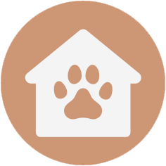
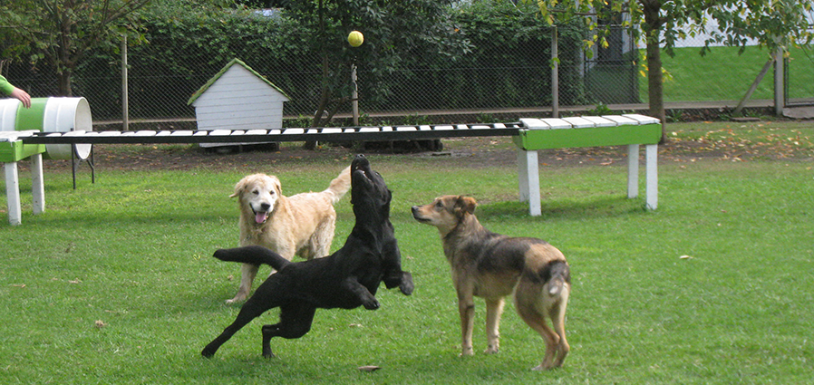
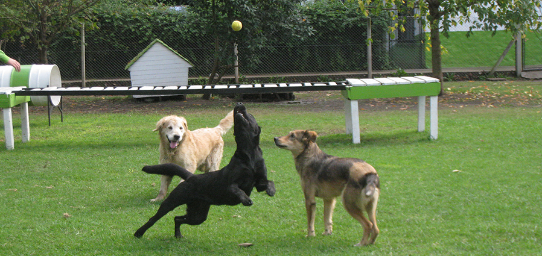

Guarderia
Contamos con un amplio terreno de 2400 m² de parque arbolado donde tu perro puede moverse libremente. Nuestras cabañas comunitarias están diseñadas para su comodidad y seguridad, permitiéndoles refugiarse según su preferencia. Aquí, los perros conviven en un entorno natural y disfrutan de juegos, paseos y cariño durante su estadía.

Actividades
En nuestra guardería canina, ofrecemos un variado menú de actividades para mantener a tus mascotas emocionados y en movimiento. Desde sesiones de juego en grupo hasta relajantes paseos por el parque, cada día es una aventura nueva. Nuestras instalaciones están diseñadas para la socialización y el descanso, garantizando que tus perros tengan una estancia placentera y activa.
Responsabilidad
Contamos con conocimientos y experiencia en el comportamiento de los perros. Te proporcionamos tranquilidad. Durante la estadía, te enviamos actualizaciones semanales para que sepas cómo está tu perro. Tu mascota disfrutará de su tiempo en un entorno familiar y natural, con total seguridad.
.png)

 
